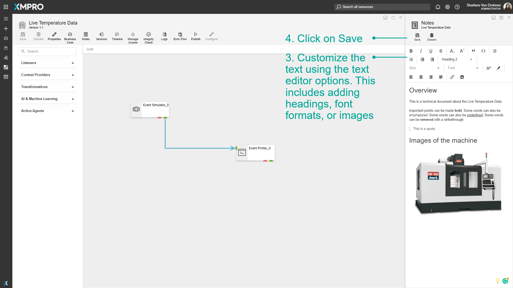

Use Business Case and Notes
A Business Case is usually written before a Data Stream is created, and is used to communicate why the users are using that particular Data Stream. They are used to quantify the financial impact, explain why the Data Stream was created and the value that was gained from using it. Business cases allow you to provide descriptions and non-technical explanations that can be communicated to other users in the organization.
Notes are another area where you can communicate and record technical information about the Data Stream. From v4.4.7 onwards, Notes are per Version rather than per Data Stream - allowing the use of notes to track the differences between versions.
Note
It is recommended that you read the article listed below to improve your understanding of Business Cases.
Adding Notes
To add a Note to the Data Stream, follow the steps below:
- Click on Notes.
- Enter the Notes in the available text field.
- Customize the text using the text editor options. This includes adding headings, font formats, or images.
- Click on Save.


Adding a Business Case
To add a Business Case to the Data Stream, follow the steps below:
- Click on Business Case.
- Enter the details for the Business Case.
- Click on Save.
Viewing or Editing a Business Case
To view or edit a Business Case, follow the steps below:
- Click on Business Case.
- View the date the Business Case was last created or modified.
- Edit any details.
- Click on Save.
Last modified: May 28, 2025